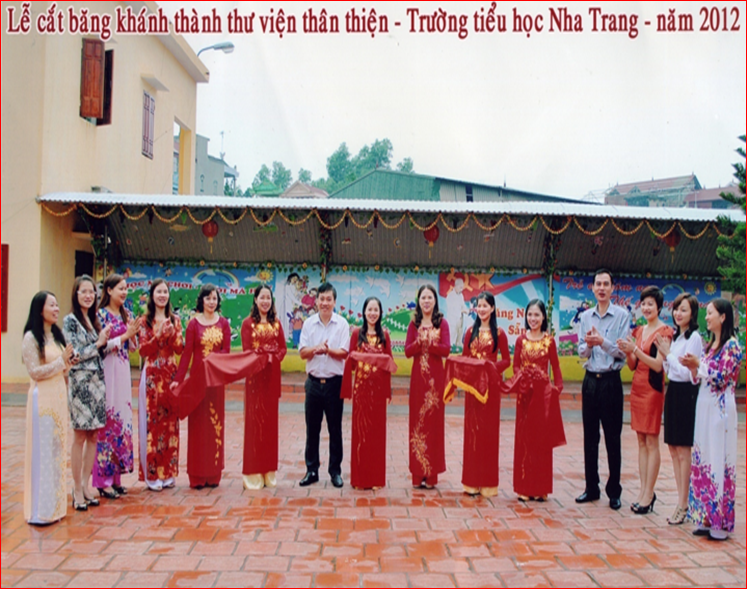

Giới thiệu sách tháng 12/2016

GIỚI THIỆU SÁCH THÁNG 12/2016
Cách đây 60 năm, khi Đất nước Việt Nam còn đang bị thực dân Pháp đô hộ và Đế quốc Mỹ xâm chiếm, đã có biết bao nhiêu anh hùng, chiến sĩ cộng sản đã không tiếc xương máu, hy sinh vì tổ quốc, vì lòng tự tôn dân tộc và vì hòa bình của Đất nước. Trong cuộc chiến loạn lạc ấy, Đất nước đã sản sinh ra những người con cho Tổ quốc, và một trong những vĩ nhân mà cả nhân dân Việt Nam và thế giới đều phải ngưỡng mộ đó là Đại tướng Võ Nguyên Giáp. Những chiến công to lớn của Đại tướng trong 2 cuộc kháng chiến chống Pháp và chống Mỹ đã đem lại tự do cho dân tộc, hòa bình cho Đất nước. Hình ảnh và tên tuổi của Đại tướng không chỉ làm cho Dân tộc Việt Nam tự hào mà lịch sử thế giới còn phải ghi nhận rằng “ Đại tướng Võ Nguyên Giáp là một trong 21 vị danh tướng của thế giới trong 25 thế kỷ qua, người đã có chiến công tạo nên bước ngoặt của nghệ thuật chiến tranh”.
Và để giúp cho tất cả bạn đọc hiểu rõ hơn về vị tướng tài ba này, hôm nay, Thư viện Trường TH Nha Trang xin trân trọng giới thiệu bạn đọc tác phẩm: “Không phải huyền thoại” do tác giả Hữu Mai biên soạn, nhà xuất bản trẻ ấn hành năm 2012.
“Không phải huyền thoại” là cuốn tiểu thuyết lịch sử đầu tiên về Đại tướng Võ Nguyên Giáp trong bối cảnh cuộc kháng chiến chống Pháp và cao trào chiến dịch lịch sử Điện Biên Phủ. Người đọc từng biết đến hình ảnh vị Đại tướng tổng tư lệnh qua những văn bản lịch sử, những hồi ký và những thước phim tư liệu. Song phải đến Không phải huyền thoại, chân dung của ông mới hiện lên như một nhân vật văn học trọn vẹn, với những ưu tư và trách nhiệm của một con người được lịch sử chọn. Cuốn sách gồm 31 chương, nội dung tập trung nói vê cuộc đời của đại tướng Võ Nguyên Giáp, về tài thao lược của người trong các cuộc chiến với giặc ngoại xâm, đặc biệt trong cuộc chiến 55 ngày đêm tại chiến dịch điện biên phủ năm 1954.
Chiến tranh, với những thăng trầm thường tạo nên những huyền thoại. Nhưng nhà văn Hữu Mai với mối quan hệ đặc biệt với nhân vật của mình, đã có cuộc hành trình trên trang giấy để tìm ra đâu là khía cạnh phi thường của một con người giữa quan hệ với muôn người, những ảnh hưởng đến sinh mệnh và cục diện chiến cuộc, đâu là khía cạnh chân thực của những nét ngoại cỡ của tầm vóc lịch sử. Một quyển sách công phu và chân thực khiến người đọc tưởng như cảm thấy hơi thở của một lịch sử rất gần đây, những hình tượng sống động như thể chiến thắng độc đáo bậc nhất trong lịch sử vừa mới được họ tạo ra.
Câu trả lời vì sao Việt Nam thắng trận Điện Biên phủ rút cuộc đã có câu trả lời, nhưng điều khiến Không phải huyền thoại vượt ra khỏi khuôn khổ biên niên sử bình thường ở chỗ còn lột tả được khía cạnh khắc nghiệt của chiến tranh. Khốc liệt ở chiến hào, quyết liệt ở trên những căn hầm sở chỉ huy, và khoan nhượng ở bàn nghị sự quốc tế. Số phận của một xu thế chính trị rơi vào những thời điểm quyết định và người cầm quân phải thỏa mãn được đáp số kép: phương án đúng và thời điểm đúng, phía sau những chiến thắng vẻ vang là những tâm sự gì, Hữu mai đã tìm được câu trả lời đầy sức nặng qua hình tượng Đại tướng Võ Nguyên Giáp, người được CNN nhận định là “một trong số những hình tượng quan trọng nhất trong thời kỳ đầu lịch sử nước Việt Nam cộng sản.”
Khi chiến tranh kết thúc, hòa bình lặp lại. Nhưng chiến công hiển hách và bài học về chiến lược quân sự của Đại tướng đã được sách báo Việt Nam và thế giới ghi lại bởi đó là bằng chứng sống, nhân chứng sống của lịch sử. Riêng đối với thế hệ trẻ thì đây là tiền đề, là những bài học quý giá mà thế hệ đi trước đã để lại với lời nhắn nhủ rằng “ Đất nước Việt Nam đang trong tay các bạn, còn hay mất, vinh hay nhục, xấu hay tốt, đều do các bạn quyết định, nếu các bạn yêu quý và trân trọng những bài học quý giá đó thì hãy sống sao cho xứng đáng với sự hy sinh mà cha ông ta đã ngã xuống để bảo vệ đất nước này”.
Khi sự ra đi của Đại tướng là niềm tiếc thương vô hạn, sự mất mát của dân tộc Việt Nam, một vị tướng tài ba của thế giới. Khó có thể nói hết cảm xúc của mọi người đối với đại tướng nhưng hình ảnh của Người mãi mãi được ghi nhớ trong lòng dân tộc Việt Nam.
Qua buổi GTS hôm nay, cô hy vọng cuốn sách: “Không phải huyền thoại” sẽ là nguồn thông tin bổ ích, đối với bạn đọc ham thích tìm hiểu lịch sử nước nhà, lịch sử đầu tiên về đại tướng Võ Nguyên Giáp.